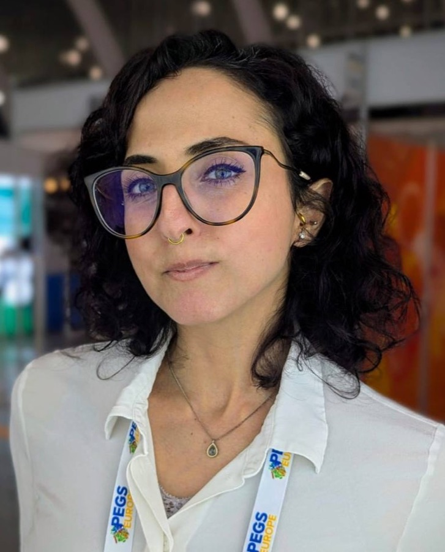

Cristina LeonardoDr. rer. nat.
I lead complex, regulated products built on AI, from machine-learning diagnostics to integrated hardware and software for biopharma. A scientist by training with 8+ years across research and product, I turn deep science into products clinicians and labs rely on. On the side, I ship my own ideas with vibecoding.

A journey to make an impact.
Same question, different lens: from building ML models on diagnostic data, to building and owning products around them. Using data to solve hard health questions and deliver products that make an impact.
Every feature starts as a testable bet with a metric that can prove it wrong.
Evaluations, error analysis and user research decide what an AI feature is ready for.
Vibecoding lets me prototype ideas in hours and put something real in front of people.
The lab: projects vibecoded with AI.
Personal experiments built end to end with AI coding tools. Each one records what it is, what it was built with and how long it took, so you can see the process as well as the result.
Open to conversations about AI products.
Product roles, advisory work, speaking, or comparing notes on building with AI.